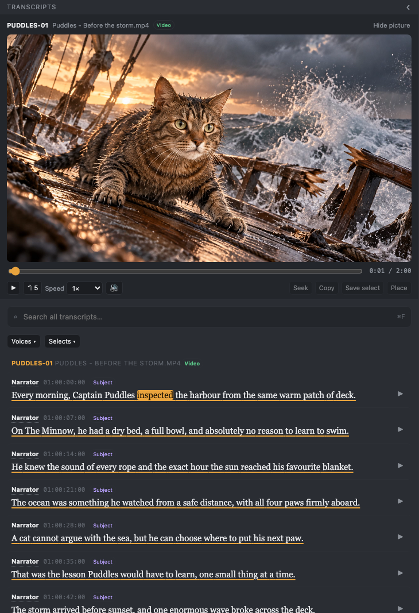
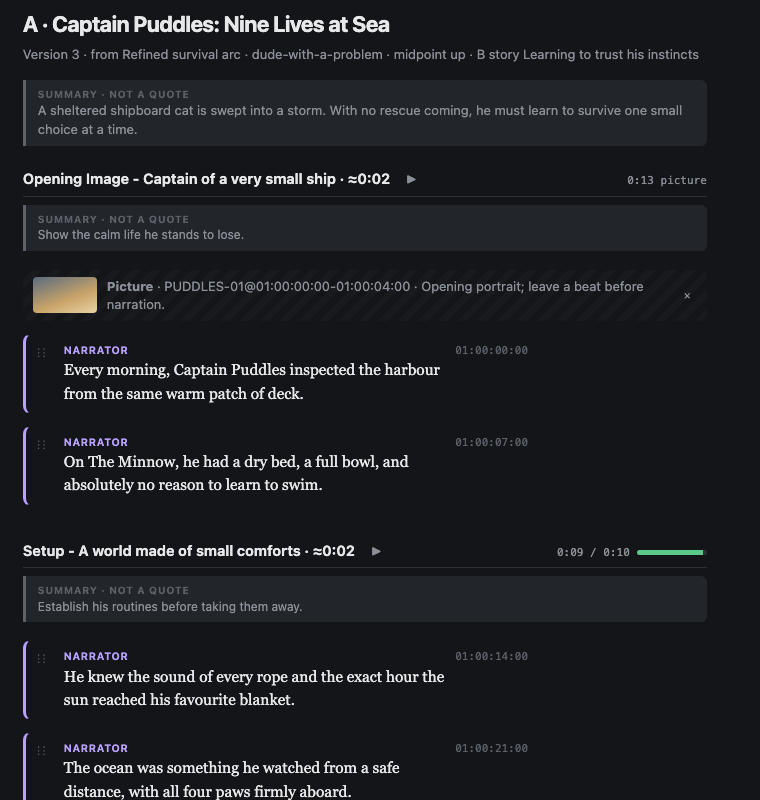
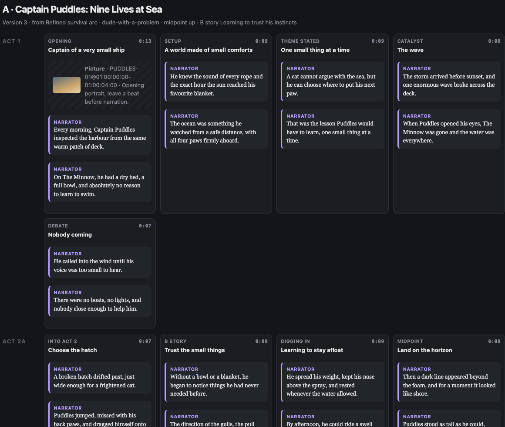
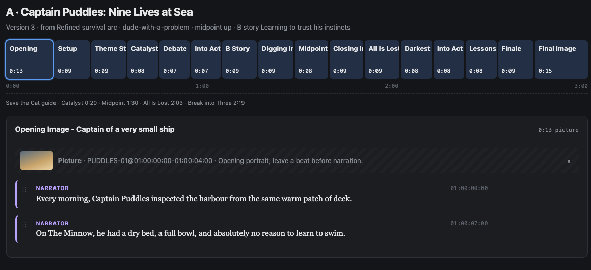

<!doctype html><html lang="en"><meta charset="utf-8"><meta name="viewport" content="width=device-width,initial-scale=1"><title>Story Builder — selected board</title><style>*{box-sizing:border-box}body{margin:0;padding:32px 20px;background:#f4f1ec;color:#1a1a1a;font-family:Arial,sans-serif;--text:#eae7df}main{max-width:1240px;margin:auto}h1{font-size:24px}.selected-board{overflow:hidden;border:1px solid #dcd6cb}  .selected-board{ display:grid; grid-template-columns:.9fr 1.3fr 1.3fr; grid-template-rows:208px 148px 280px; grid-template-areas:"icon script board" "transcript script board" "transcript strip strip"; gap:16px; padding:24px; background:var(--text); align-items:stretch; }
  .selected-board img{ width:100%; height:100%; min-width:0; min-height:0; max-height:100%; object-fit:contain; border-radius:14px; background:#121417; }
  .selected-board img:nth-child(1){ grid-area:icon; width:208px; height:208px; max-width:100%; justify-self:center; align-self:center; background:none; }
  .selected-board img:nth-child(2){ grid-area:transcript; object-position:center top; background:#26292f; }
  .selected-board img:nth-child(3){ grid-area:script; padding:18px; object-position:center; }
  .selected-board img:nth-child(4){ grid-area:board; padding:18px; object-fit:cover; object-position:left top; }
  .selected-board img:nth-child(5){ grid-area:strip; padding:18px; object-fit:cover; object-position:center top; }
  .selected-board{ min-height:716px; }
  @media (max-width:720px){
    .selected-board{ min-height:0; }
    .selected-board{ grid-template-columns:.95fr 1.05fr; grid-template-rows:auto auto auto; grid-template-areas:"icon script" "transcript board" "transcript strip"; gap:10px; padding:14px; align-items:start; align-content:start; }
    .selected-board img{ height:auto; max-height:none; }
    .selected-board img:nth-child(1){ width:132px; height:auto; }
    .selected-board img:nth-child(3), .selected-board img:nth-child(4), .selected-board img:nth-child(5){ padding:10px; }
    .selected-board img:nth-child(4), .selected-board img:nth-child(5){ object-fit:contain; }
  }
</style><main><h1>Story Builder — feature board</h1><div class="selected-board"></div></main></html>